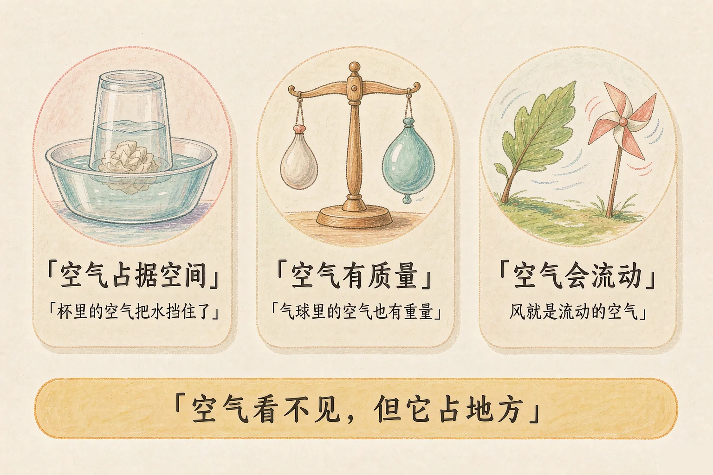
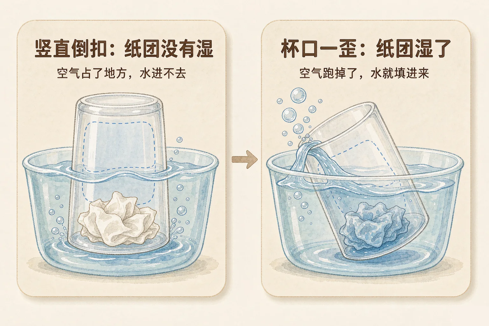
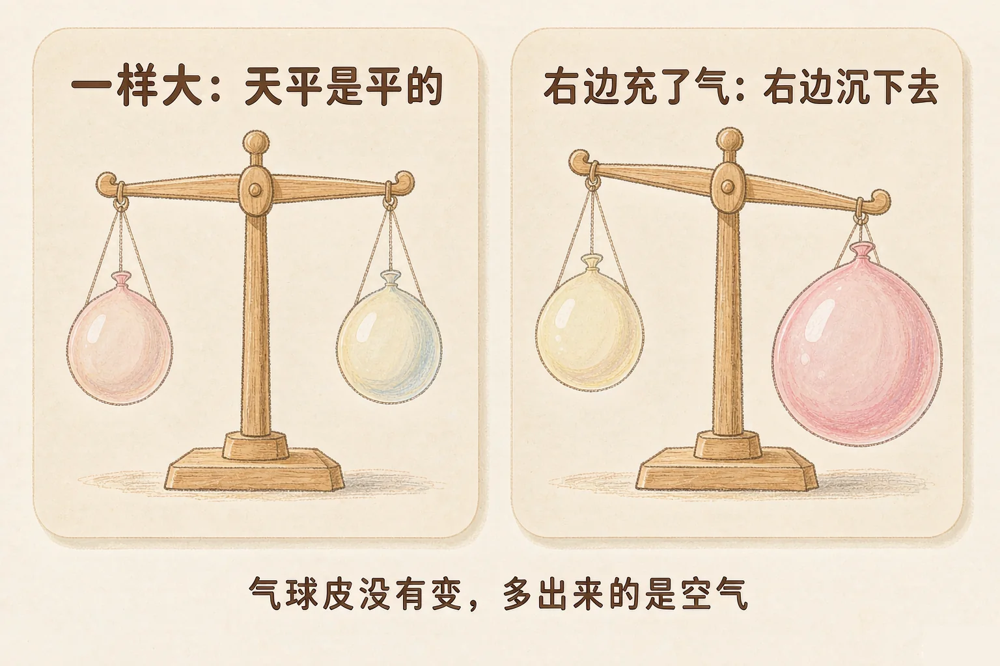

小学三年级 · 物质科学 · 物质的结构与性质
一个空杯子、一个气球、一阵风——看不见的空气到底在哪里？

选一个你真正好奇的问题，后面的实验都会围着它转。
选择或输入后，这节课会围绕你的问题展开。
先凭直觉选一个，选完立刻看到解释——错了也没关系，正好知道要重点听哪里。
1. 一个空杯子扣在桌子上，杯子里有什么？
我们看不见空气，所以常常误认为杯子是空的。其实杯子里装满了空气。错因提醒：这是这一课最常见的错误——看不见不等于不存在。空气也是物质，它占了杯子里全部的地方。
2. 把一团纸塞在杯子底部，杯口朝下竖直按进水里，纸团会怎样？
杯子里的空气挡住了水，水进不去，纸团就还是干的。错因提醒：有同学误认为杯子一进水纸必然湿，忽略了杯子里那份占了地方的空气。
3. 风是什么？
空气跑动起来就是风，我们看不到空气，只能感觉到它在流动。错因提醒：不要把风和树叶搞混——树叶是被流动的空气推着动的，风本身是空气在跑。
我们的身边到处都是空气。你已经知道杯子看起来是空的，但有一个问题一直没弄明白：为什么倒扣进水里的杯子，纸团不会湿？答案就在杯子里那份看不见的空气上。
空气在哪里
教室里、书包里、气球里、甚至一杯水里，都有空气。它看不见、摸不着，但到处都在。
空气占据空间
空气不是空的，它实实在在占着位置。一个地方被空气占了，别的东西就挤不进去。

🔍 深层理解 换个角度再看一遍这件事，看看能不能说出背后的原理。
看见它：空气看不见，我们只能看它做出来的事：气球鼓起来、杯子挡住水、树叶被吹动。
解释它：为什么水进不去杯子？因为一个地方只能待一样东西。空气已经占了杯子里全部的地方，水就没有位置了。
迁移它：把空的矿泉水瓶按进水里，你会看到咕噜咕噜冒泡——那是空气在往外跑，它在给水让位置。
先做杯子实验，再玩针筒。每做一步，读一读下面的解释。
活塞回到中间。针筒口是堵住的，空气一直在里面，不多也不少。再推推看，它还能变得更小。
空气除了会占地方，还有两个很有用的本领：它有质量，也会流动。

很多同学误认为空气没有质量，因为气球很轻、看不见。其实气球本来就轻，多打进去的空气更轻，但天平还是能感觉出来。所以空气不是没有质量，只是质量很小。
只给右边的气球打气，一边打一边看天平。想一想，气球重了吗？
两个气球一样大，天平是平的。现在点一下按钮，只给右边那个气球打气。
题目：把一团纸塞在杯子底部，杯口朝下，竖直按进水底，再竖直拿出来。纸团会湿吗？请说出理由。
直接说杯子进水了、纸一定湿，是最典型的错误。这里要区分两件事：杯子到了水里，不等于水进了杯子里。只要空气还在，水就进不去。
先凭直觉选一个，选完立刻看到解释——错了也没关系，正好知道要重点听哪里。
1. 下面哪句话是对的？
空气占地方，也有质量，教室里到处都是空气。错因提醒：把看不见和不存在搞混，是这一课最典型的常见错误。
2. 打完气的气球比没打气的时候重一点，这说明：
气球皮没有变，多出来的是打进去的空气。错因提醒：很多同学误认为空气轻得没有质量，所以天平不会动。实际上天平能感觉出这一点点差别。
3. 把杯口歪着按进水里，纸团湿了。最合理的解释是：
杯子一歪，空气有了出口就跑了，空出来的地方被水填满。错因提醒：不要误认为纸湿是纸自己的问题，真正变的是杯子里还有没有空气。
点开三张卡片，用「空气占据空间」把每一件事说清楚。然后写一写你自己想到的例子。
点上面任意一张卡片，看看空气在这里帮了什么忙。
轮到你了：在你家里或者教室里，找一个用得到空气的地方，写下来。
先凭直觉选一个，选完立刻看到解释——错了也没关系，正好知道要重点听哪里。
1. 足球打足了气就变得很硬，踢起来弹得远。这是因为：
打气把空气挤进足球里，空气占了里面的空间，球就撑紧了。看不见的力，来自看不见的空气。
2. 风车的叶片转起来了，是谁在推它？
风就是流动的空气。空气跑动的时候会推着东西走，风车叶片就是这样被推着转起来的。
3. 把塑料袋的口张开，在空中兜一圈再扎紧，塑料袋就鼓起来了。里面装的是：
兜一圈的时候，空气跑进了袋子，再把口扎紧，空气就跑不掉了。这说明空气看得见「形状」，也占地方。
回到开头那个谜语：看不见、摸不着，吹气球靠它，风吹树叶也靠它，一分钟都离不开——答案就是空气。今天我们还发现，它不只是「在」，它还会占地方、有质量、会流动。
打个比方记住它：空气就像一群挤在教室里的小朋友。人进了教室，别的班就进不来；人往外走，位置就空出来。空气也是这样，谁占了地方，别人就进不去。
三层练习，做完第一、二层就算通关；第三层留给愿意继续探索的同学。
⭐ 基础巩固（必做）
⭐⭐ 能力应用（必做）
⭐⭐⭐ 迁移挑战（选做）
左边是学它之前要先会的，右边是学会之后可以继续探索的，下面是同一领域的伙伴知识。